18 Formatowanie wykresów
Rozdział przedstawia elementy wykresu, które nie zmieniają przedstawianych danych, ale decydują o czytelności wykresu: podpisy, osie i ich skale, motyw, legendę, kolor, wielkość i kształt symboli, tekst na wykresie oraz łączenie kilku wykresów w jedną rycinę. Każda sekcja pokazuje funkcję albo argument ggplot2 na przykładzie danych Gapminder (Sekcja 3.1); kod jest zwinięty nad każdą ryciną. Ogólne zasady dobrej prezentacji omawia Rozdział 12.
Kod: wczytanie pakietów i danych
library(tidyverse)
library(patchwork)
library(ggrepel)
dane <- read.csv("dane/gapminder_regions.csv", encoding = "UTF-8") |>
mutate(across(where(is.character), as.factor))
dane2007 <- dane |>
filter(year == 2007)
# wykres bazowy wykorzystywany w kilku sekcjach rozdziału
wykres <- ggplot(dane2007, aes(x = gdpPercap, y = lifeExp, colour = kontynent)) +
geom_point(size = 2) +
scale_x_log10()18.1 Podpisy
labs() ustala tytuł (title), podtytuł (subtitle), podpis pod wykresem (caption), tytuły osi (x, y) i tytuły legend — nazwą cechy graficznej, np. colour, fill, size (Rycina 18.1). Tytuł osi podaje nazwę zmiennej i jednostkę.
Kod
wykres +
labs(title = "Oczekiwana długość życia a PKB per capita",
subtitle = "142 kraje, 2007",
caption = "Źródło danych: Gapminder",
x = "PKB per capita [USD, skala logarytmiczna]",
y = "Oczekiwana długość życia [lata]",
colour = "Kontynent") +
theme_bw(base_size = 12)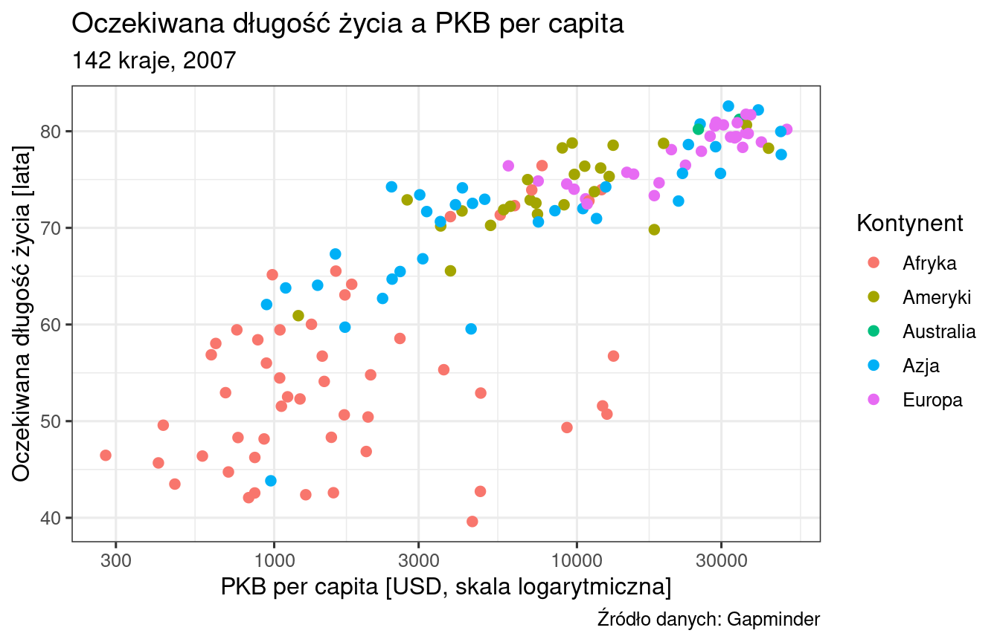
W raporcie Quarto tytuł ryciny zwykle podaje się w podpisie (fig-cap, Sekcja 7.5), a nie w labs(title = ).
18.2 Osie i skale
18.2.1 Opisy osi i zakres
scale_x_continuous() i scale_y_continuous() określają opisy osi liczbowej: breaks — wartości opisane na osi, labels — sposób zapisu tych wartości, limits — zakres osi (Rycina 18.2). Funkcje pakietu scales formatują opisy, np. label_number(big.mark = " ") dodaje spację jako separator tysięcy.
Kod
srednie <- ggplot(dane, aes(x = year, y = lifeExp, colour = kontynent)) +
stat_summary(fun = mean, geom = "line", linewidth = 1) +
labs(x = "Rok", y = "Średnia oczekiwana długość życia [lata]", colour = NULL) +
theme_bw(base_size = 11)
srednie +
(srednie + scale_x_continuous(breaks = seq(1957, 2007, 10))) + # opis osi: lata 1957, 1967, ..., 2007
plot_layout(guides = "collect") +
plot_annotation(tag_levels = "A")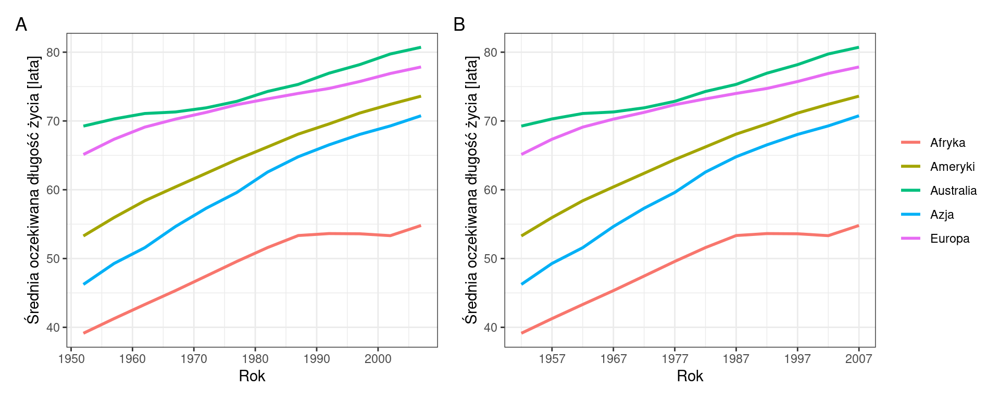
seq(1957, 2007, 10) tworzy ciąg liczb od 1957 do 2007 co 10. Domyślne opisy osi to okrągłe wartości (A), a na rycinie B opisano lata, dla których zbiór zawiera obserwacje.
18.2.2 Skala logarytmiczna
Skala logarytmiczna przedstawia zmienną o wartościach różniących się o rzędy wielkości: równe odległości na osi odpowiadają równym ilorazom wartości (Sekcja 4.2). Przy skali liniowej większość punktów skupia się przy krawędzi wykresu (Rycina 18.3 A), przy logarytmicznej rozkłada się na całej osi (Rycina 18.3 B).
Kod
ludnosc <- ggplot(dane2007, aes(x = pop / 1000000, y = lifeExp)) +
geom_point() +
labs(x = "Liczba ludności [mln]", y = "Oczekiwana długość życia [lata]") +
theme_bw(base_size = 11)
ludnosc + (ludnosc + scale_x_log10()) + plot_annotation(tag_levels = "A")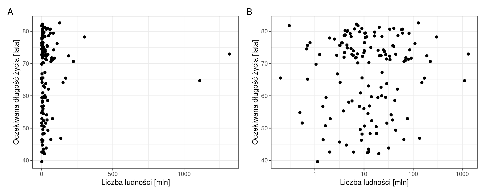
18.2.3 Te same jednostki na obu osiach
Gdy obie osie przedstawiają tę samą zmienną w tych samych jednostkach, np. wartość w dwóch latach, jednostka na obu osiach powinna mieć tę samą długość — zapewnia to coord_equal() (Rycina 18.4). Linia równości geom_abline() oddziela kraje, w których wartość wzrosła (nad linią), od krajów, w których zmalała (pod linią).
Kod
afryka <- dane |>
filter(kontynent == "Afryka", year %in% c(1957, 2007)) |>
select(kraj, year, lifeExp) |>
pivot_wider(names_from = year, values_from = lifeExp, names_prefix = "r")
lata <- ggplot(afryka, aes(x = r1957, y = r2007)) +
geom_abline(slope = 1, intercept = 0, linetype = "dashed") + # linia równości y = x
geom_point(size = 2) +
labs(x = "1957 [lata]", y = "2007 [lata]") +
theme_bw(base_size = 11)
lata + (lata + coord_equal()) + plot_annotation(tag_levels = "A")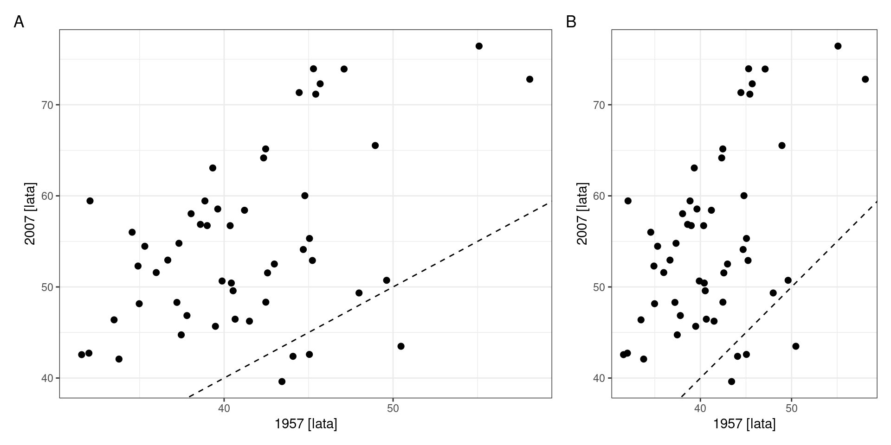
Jeżeli na obu osiach znajdują się te same jednostki, np. lata, jednostka musi mieć na obu osiach tę samą długość. Panel A na rycinie 18.4 nie jest poprawny.
18.3 Motyw
Gotowe motywy (theme_bw(), theme_minimal(), theme_classic(), theme_void()) zmieniają wygląd tła, siatki i ramki (Rycina 18.5). Argument base_size ustala wielkość czcionki wszystkich elementów.
Kod
maly <- wykres + labs(x = "PKB per capita [USD]", y = "Oczekiwana długość życia [lata]") +
theme(legend.position = "none")
(maly | maly + theme_bw() + theme(legend.position = "none")) /
(maly + theme_minimal() + theme(legend.position = "none") |
maly + theme_classic() + theme(legend.position = "none")) +
plot_annotation(tag_levels = "A")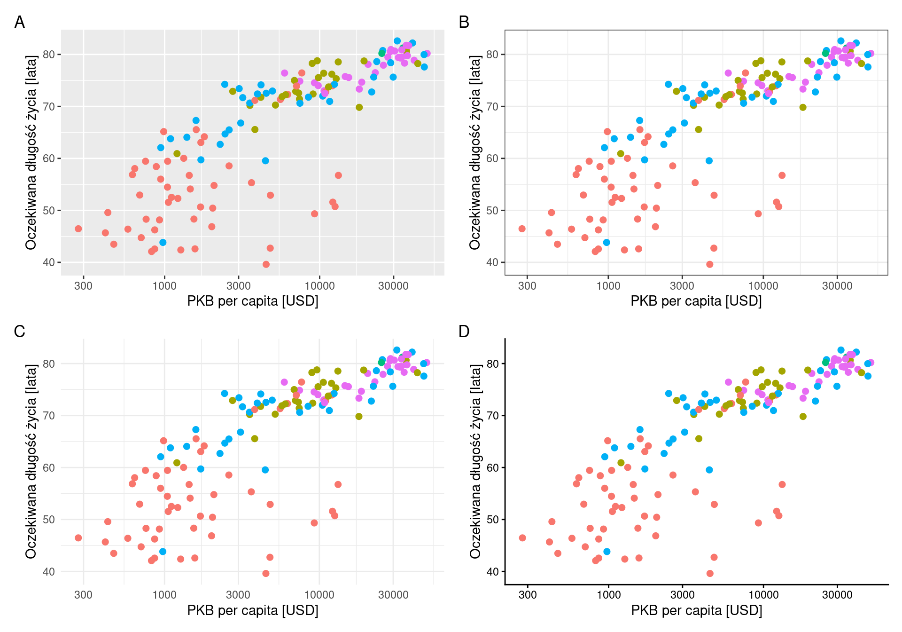
theme() zmienia pojedyncze elementy motywu. Elementy tekstowe ustawia funkcja element_text(), np. axis.text = element_text(size = 12) — wielkość opisów wartości na osiach, axis.title = element_text(size = 13) — wielkość tytułów osi, legend.text — wielkość opisów w legendzie. theme() dodaje się po gotowym motywie, ponieważ gotowy motyw zastępuje wszystkie wcześniejsze ustawienia.
18.4 Legenda
Położenie legendy ustala theme(legend.position = ): "right" (domyślnie), "bottom", "top", "left" albo "none" — bez legendy (Rycina 18.6). Legendę usuwa się, gdy kategorie są opisane bezpośrednio na wykresie, np. w nagłówkach paneli.
Kod
wykres +
labs(x = "PKB per capita [USD]", y = "Oczekiwana długość życia [lata]", colour = NULL) +
theme_bw(base_size = 12) +
theme(legend.position = "bottom")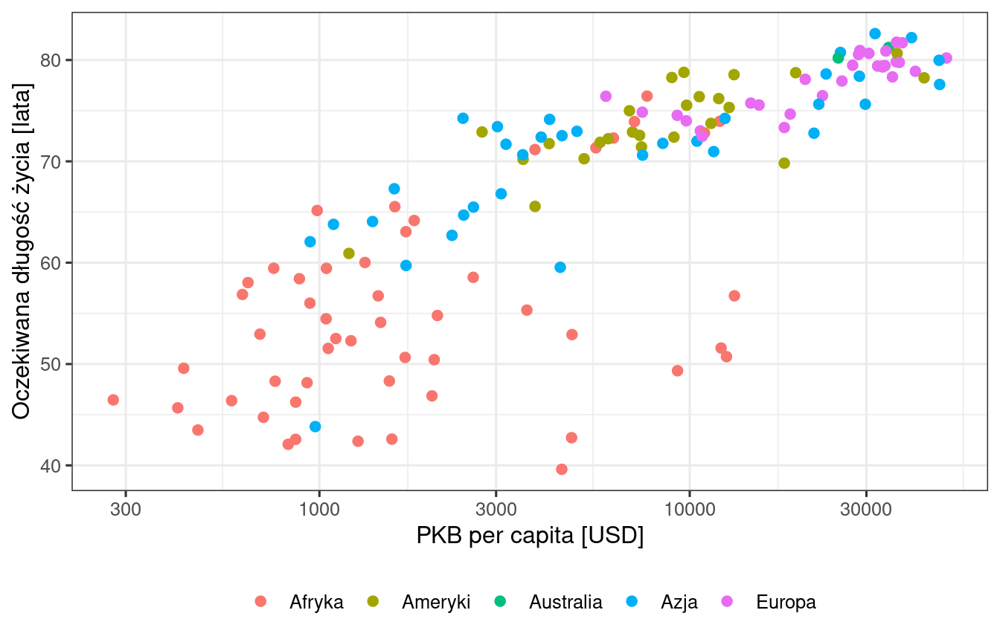
18.5 Kolor
18.5.1 Trzy zastosowania koloru
Kolor na wykresie służy do:
- odróżnienia grup — każda kategoria ma inny kolor (Rycina 18.7);
- przedstawienia wartości — kolor odpowiada wartości zmiennej ilościowej (Rycina 18.8);
- wyróżnienia — wybrane obserwacje mają kolor, pozostałe są szare (Rycina 18.9).
Kod
dane2007 |>
filter(kontynent == "Europa") |>
ggplot(aes(x = gdpPercap, y = lifeExp, colour = subregion_pl)) +
geom_point(size = 3) +
scale_colour_brewer(palette = "Dark2") +
labs(x = "PKB per capita [USD]", y = "Oczekiwana długość życia [lata]",
colour = "Subregion") +
theme_bw(base_size = 12)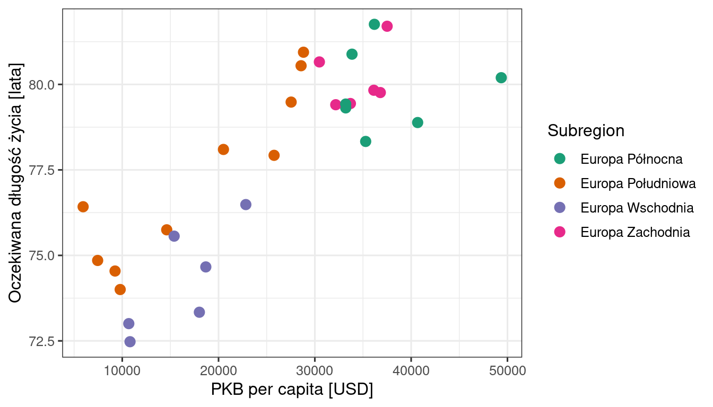
Kod
afryka_kafle <- dane |>
filter(kontynent == "Afryka") |>
ggplot(aes(x = year, y = fct_reorder(kraj, lifeExp), fill = lifeExp)) +
geom_tile() +
labs(x = "Rok", y = NULL, fill = "Oczekiwana\ndługość życia\n[lata]") +
theme_bw(base_size = 8)
# obie skale: ta sama paleta (YlGnBu), ten sam kierunek i ten sam zakres wartości (20–80 lat)
(afryka_kafle + scale_fill_distiller(palette = "YlGnBu", direction = 1, # skala ciągła
limits = c(20, 80))) +
(afryka_kafle + scale_fill_fermenter(palette = "YlGnBu", direction = 1, # klasy co 10 lat
limits = c(20, 80), breaks = seq(30, 70, 10))) +
plot_annotation(tag_levels = "A")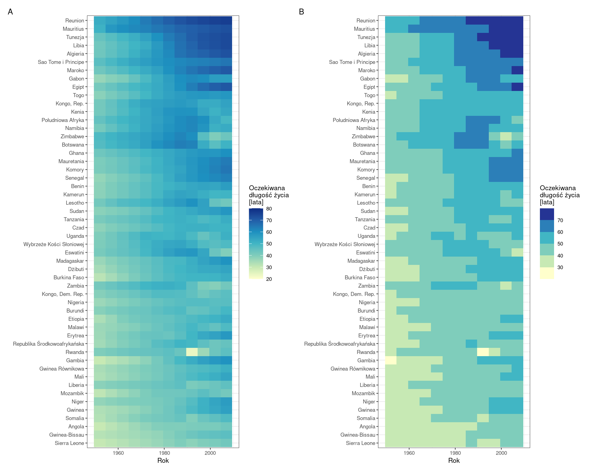
Kod
dane |>
filter(kontynent == "Europa", year %in% c(1952, 2007)) |>
select(kraj, year, lifeExp) |>
pivot_wider(names_from = year, values_from = lifeExp, names_prefix = "r") |>
mutate(przyrost = r2007 - r1952,
polska = kraj == "Polska") |> # TRUE dla Polski
ggplot(aes(x = przyrost, y = fct_reorder(kraj, przyrost), fill = polska)) +
geom_col() +
scale_fill_manual(values = c("TRUE" = "darkblue", "FALSE" = "grey75")) +
labs(x = "Przyrost oczekiwanej długości życia 1952–2007 [lata]", y = NULL) +
theme_bw(base_size = 11) +
theme(legend.position = "none")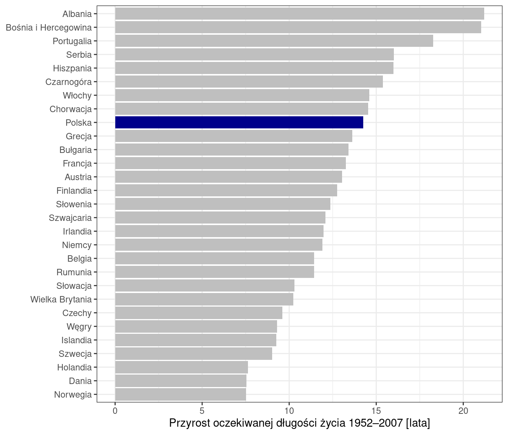
18.5.2 Skale kolorystyczne
Wyróżnia się trzy rodzaje skal kolorystycznych:
- jakościowe — kolory wyraźnie różne, o podobnej jasności i nasyceniu; żaden kolor nie wyróżnia się na tle innych, a kolory nie sugerują uporządkowania. Stosuje się je do kategorii bez porządku, np. kontynentów, typów gleb;
- sekwencyjne — kolory o zmieniającej się jasności, od jasnego do ciemnego; wskazują, które wartości są większe. Stosuje się je do wartości uporządkowanych, od małych do dużych;
- rozbieżne — dwie sekwencje kolorów rozchodzące się od wartości środkowej, np. od 0 albo od średniej. Stosuje się je, gdy istotne jest odchylenie w dwie strony od wartości środkowej, np. zmiana dodatnia i ujemna.
Palety ColorBrewer (Rycina 18.10) wykorzystują funkcje: scale_colour_brewer() i scale_fill_brewer() — dla zmiennej jakościowej, scale_colour_distiller() i scale_fill_distiller() — dla zmiennej ilościowej (skala ciągła), scale_fill_fermenter() — dla zmiennej ilościowej podzielonej na klasy. Argument palette podaje nazwę palety, a direction = -1 odwraca jej kolejność.
Kod: zestawienie palet ColorBrewer (pakiet RColorBrewer, grafika podstawowa R)
RColorBrewer::display.brewer.all()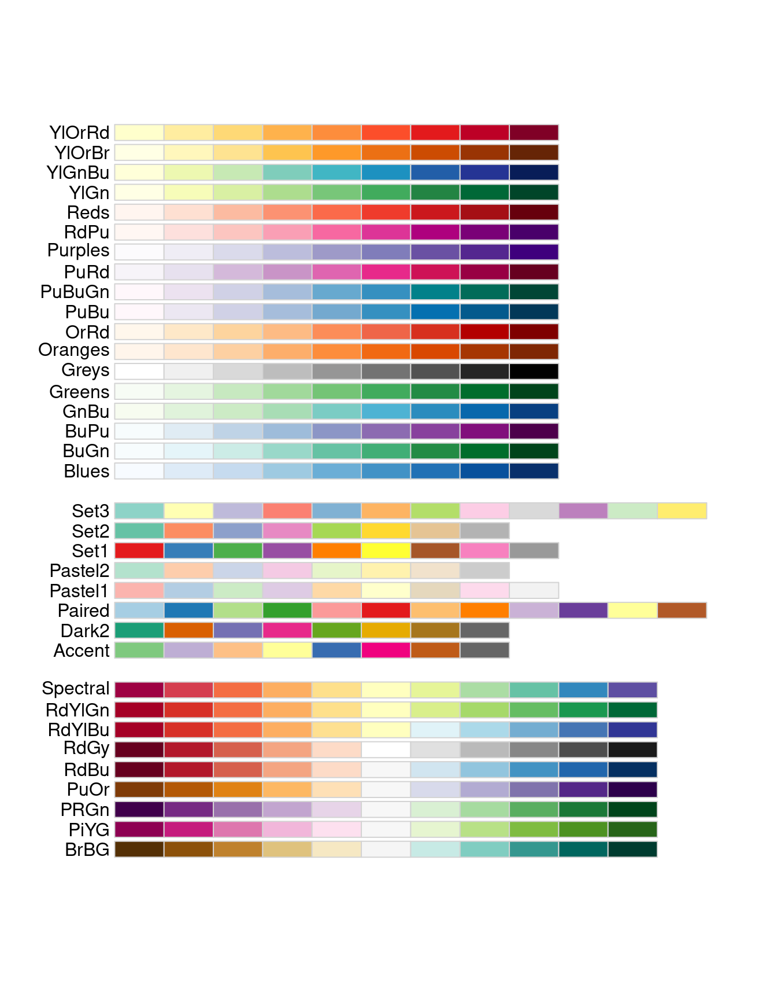
Palety viridis (scale_colour_viridis_c(), scale_fill_viridis_c() dla wartości ciągłych, scale_colour_viridis_d() dla kategorii uporządkowanych) są sekwencyjne: kolory są uporządkowane od najciemniejszego do najjaśniejszego, a direction = -1 odwraca tę kolejność.
Kolory można też podać samodzielnie w scale_colour_manual() i scale_fill_manual(): nazwą ("darkblue", "orange"; listę nazw zwraca funkcja colors()) albo kodem szesnastkowym ("#0072B2"). Wektor nazwany przypisuje kolor do kategorii, np. values = c("Afryka" = "orange", "Europa" = "darkblue").
18.5.3 Zaburzenia rozpoznawania barw
Część odbiorców nie rozróżnia niektórych barw:
- deuteranopia — nierozpoznawanie barwy zielonej; brak rozróżnienia barw czerwonej, pomarańczowej, żółtej i zielonej;
- protanopia — nierozpoznawanie barwy czerwonej albo mylenie jej z zieloną;
- tritanopia — odmiana niebiesko-żółta: trudność z postrzeganiem barwy niebieskiej.
Przy deuteranopii i protanopii kontrast czerwono-zielony staje się nierozróżnialny, przy tritanopii — kontrast niebiesko-zielony. Skale sekwencyjne pozostają czytelne, o ile kolory różnią się jasnością. Paletę jakościową rozpoznawalną przy zaburzeniach barw zaproponowali Okabe i Ito (2008, za: Wilke, 2019); w R zwraca ją funkcja palette.colors(palette = "Okabe-Ito") (Rycina 18.11). Symulacje postrzegania palet przy zaburzeniach barw przedstawia Wilke (2019, rozdz. 19).
Kod
okabe_ito <- unname(palette.colors(palette = "Okabe-Ito"))[2:6] # 5 kolorów, bez czarnego
wykres +
scale_colour_manual(values = okabe_ito) +
labs(x = "PKB per capita [USD]", y = "Oczekiwana długość życia [lata]",
colour = "Kontynent") +
theme_bw(base_size = 12)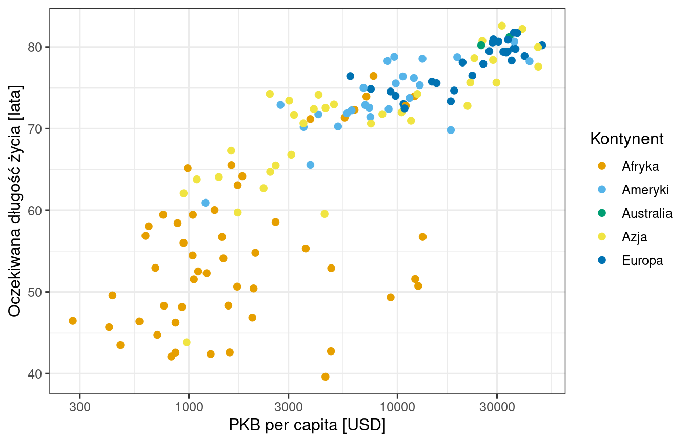
18.5.4 Czy kolor jest potrzebny
Kolor jest potrzebny, gdy przedstawia informację, której wykres nie przekazuje w inny sposób. Na rycinie 18.12 A kolor pozwala rozróżnić linie kontynentów. Na rycinie 18.12 B kontynent odczytuje się z osi, dlatego kolor słupków powtarza tę samą informację i nie jest potrzebny. Podobnie na rycinie 18.9 kolor wyróżnia jeden kraj; ten sam wykres z kolorem zależnym od długości słupka przedstawiałby tę samą wartość dwa razy.
Kod
potrzebny <- ggplot(dane, aes(x = year, y = lifeExp, colour = kontynent)) +
stat_summary(fun = mean, geom = "line", linewidth = 1) +
scale_colour_brewer(palette = "Dark2") +
labs(x = "Rok", y = "Średnia oczekiwana długość życia [lata]", colour = NULL) +
theme_bw(base_size = 11)
zbedny <- dane2007 |>
group_by(kontynent) |>
summarise(srednia = mean(lifeExp)) |>
ggplot(aes(x = kontynent, y = srednia, fill = kontynent)) +
geom_col() +
scale_fill_brewer(palette = "Dark2", guide = "none") +
labs(x = NULL, y = "Średnia oczekiwana długość życia, 2007 [lata]") +
theme_bw(base_size = 11)
potrzebny + zbedny + plot_annotation(tag_levels = "A")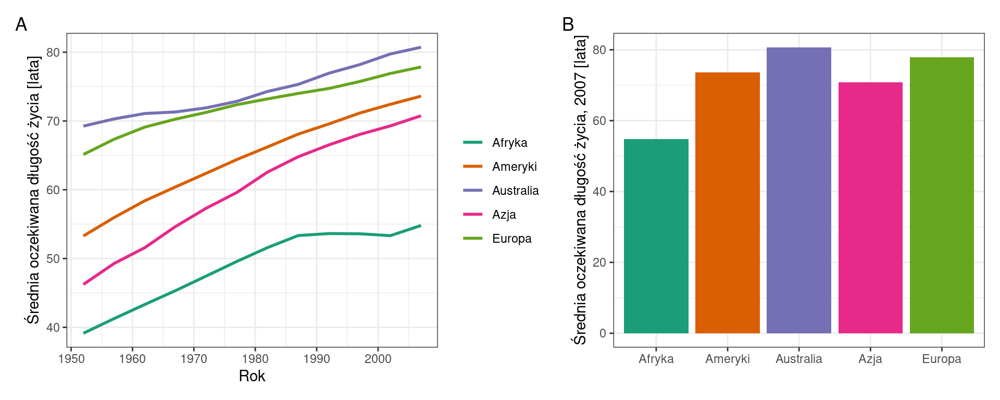
18.6 Wielkość, kształt i przezroczystość
Argumenty podane w geom_point() poza aes() mają tę samą wartość dla wszystkich punktów (Rycina 18.13):
size— wielkość punktu;shape— kształt punktu, podany numerem; kształty 21–25 mają obwódkę (colour) i wypełnienie (fill);alpha— przezroczystość od 0 (punkt niewidoczny) do 1 (punkt nieprzezroczysty); przy wielu nakładających się punktach widać ich zagęszczenie.
Kod
ggplot(dane2007, aes(x = gdpPercap, y = lifeExp)) +
geom_point(shape = 21, size = 3, colour = "white", fill = "#1f4e79", alpha = 0.7) +
scale_x_log10() +
labs(x = "PKB per capita [USD]", y = "Oczekiwana długość życia [lata]") +
theme_bw(base_size = 12)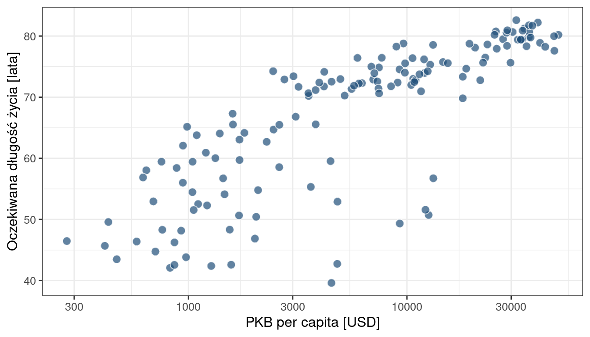
Wielkość i kształt mogą też przedstawiać zmienną — wtedy podaje się je w aes() (Sekcja 4.3). Kolor i kształt przedstawiają kategorie, a odbiorca rozróżnia ich niewiele: Wilke (2019, rozdz. 19) zaleca dla koloru najlepiej 3–5 kategorii, najwyżej 8. Rycina 18.14 pokazuje poprawny wariant z 5 kontynentami (A, C) i niepoprawny z 18 subregionami (B, D), w którym nie można przypisać punktu do kategorii.
Kod
kategorie <- ggplot(dane2007, aes(x = gdpPercap, y = lifeExp)) +
labs(x = "PKB per capita [USD]", y = "Oczekiwana długość życia [lata]") +
theme_bw(base_size = 10) +
theme(legend.key.height = unit(0.35, "cm"), legend.text = element_text(size = 8))
((kategorie + geom_point(aes(colour = kontynent), size = 2) +
scale_colour_brewer(palette = "Dark2") + labs(colour = NULL)) |
(kategorie + geom_point(aes(colour = subregion_pl), size = 2) +
labs(colour = NULL))) /
((kategorie + geom_point(aes(shape = kontynent), size = 2) + labs(shape = NULL)) |
(kategorie + geom_point(aes(shape = subregion_pl), size = 2) +
scale_shape_manual(values = 0:17) + labs(shape = NULL))) + # numery 18 kształtów
plot_annotation(tag_levels = "A")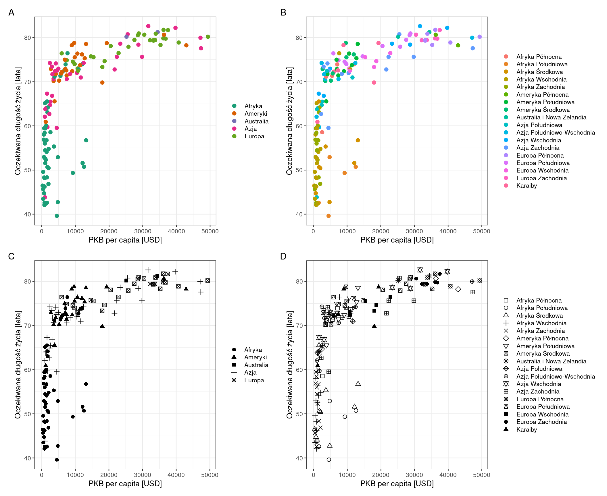
18.7 Tekst na wykresie
Etykiety przy obserwacjach dodaje geom_text() albo geom_label() (etykieta na tle), z mapowaniem label. Gdy etykiety na siebie nachodzą, geom_text_repel() z pakietu ggrepel rozsuwa je i łączy z punktami odcinkami (Rycina 18.15). Etykietuje się zwykle tylko wybrane obserwacje.
Kod
najludniejsze <- dane2007 |>
slice_max(pop, n = 5) # 5 krajów o największej ludności
ggplot(dane2007, aes(x = gdpPercap, y = lifeExp)) +
geom_point(colour = "grey60") +
geom_point(data = najludniejsze, colour = "darkblue", size = 3) +
geom_text_repel(data = najludniejsze, aes(label = kraj), seed = 1) +
scale_x_log10() +
labs(x = "PKB per capita [USD]", y = "Oczekiwana długość życia [lata]") +
theme_bw(base_size = 12)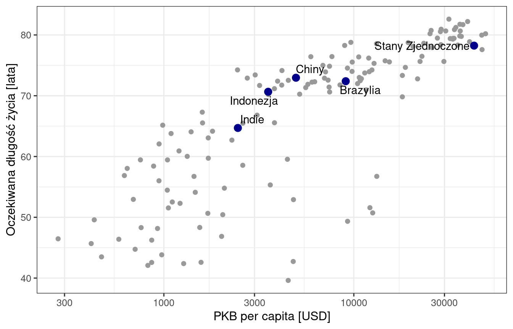
slice_max(pop, n = 5) wybiera 5 wierszy o największej wartości pop. Warstwy z argumentem data korzystają z innej tabeli niż pozostałe warstwy wykresu.
18.8 Łączenie wykresów
Pakiet patchwork łączy wykresy zapisane jako obiekty w jedną rycinę: + albo | umieszcza wykresy obok siebie, / — jeden pod drugim, a plot_annotation(tag_levels = "A") oznacza je literami (Rycina 18.16). plot_layout(guides = "collect") łączy jednakowe legendy w jedną. Pełny opis układów zawiera dokumentacja pakietu patchwork.
Kod
histogram <- ggplot(dane2007, aes(x = lifeExp)) +
geom_histogram(binwidth = 5, fill = "grey40", colour = "white") +
labs(x = "Oczekiwana długość życia [lata]", y = "Liczba krajów") +
theme_bw(base_size = 11)
pudelkowy <- ggplot(dane2007, aes(x = kontynent, y = lifeExp)) +
geom_boxplot() +
labs(x = NULL, y = "Oczekiwana długość życia [lata]") +
theme_bw(base_size = 11)
histogram + pudelkowy + plot_annotation(tag_levels = "A")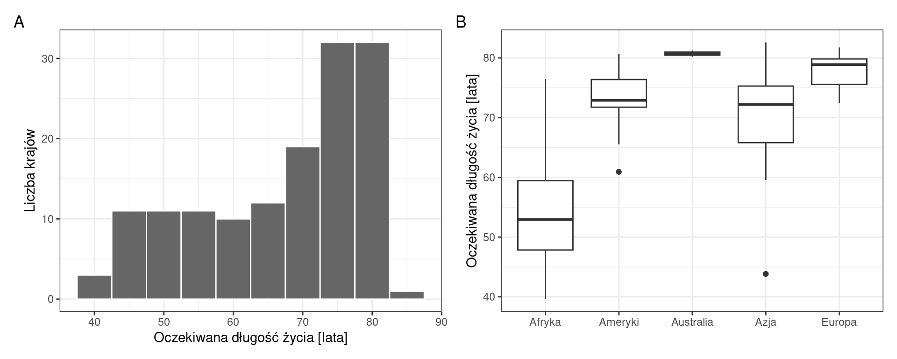
Układ trzech wykresów określa się tymi samymi operatorami; nawiasy grupują wykresy tak jak w działaniach matematycznych. Przykłady wykorzystują trzeci wykres, rozrzut:
Kod
rozrzut <- ggplot(dane2007, aes(x = gdpPercap, y = lifeExp)) +
geom_point() +
labs(x = "PKB per capita [USD]", y = "Oczekiwana długość życia [lata]") +
theme_bw(base_size = 11)
histogram + pudelkowy + rozrzut + plot_annotation(tag_levels = "A")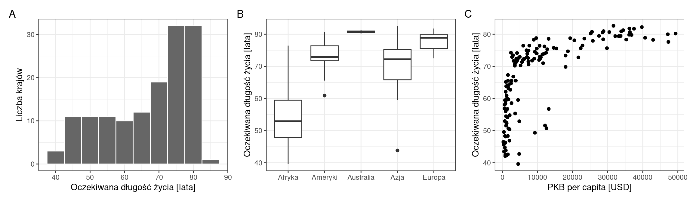
Kod
histogram / pudelkowy / rozrzut + plot_annotation(tag_levels = "A")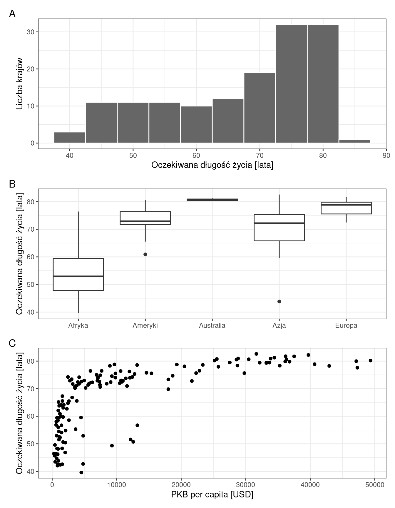
Kod
(histogram | pudelkowy) / rozrzut + plot_annotation(tag_levels = "A")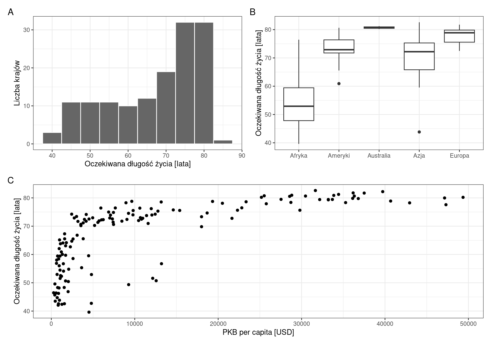
Na rycinie 18.19 dolny wykres jest szerszy od górnych. Aby trzy wykresy w dwóch wierszach miały tę samą wielkość, czwarte pole wypełnia pusty element plot_spacer() (Rycina 18.20).
Kod
(histogram | pudelkowy) / (rozrzut | plot_spacer()) + plot_annotation(tag_levels = "A")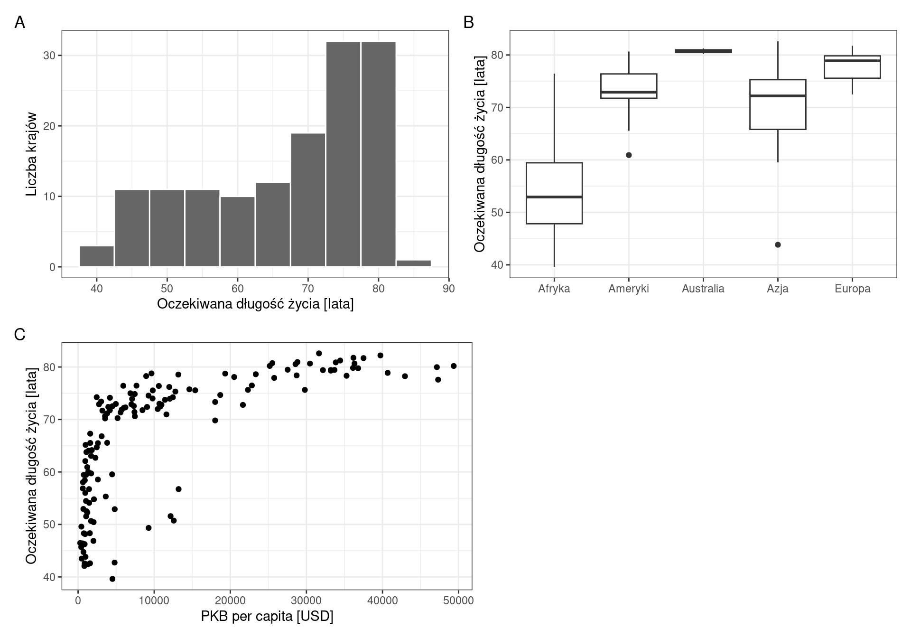
18.9 Wymiary ryciny i zapis do pliku
W dokumencie Quarto wymiary ryciny ustalają opcje bloku fig-width i fig-height (w calach, Sekcja 7.4.3). Wykres można też zapisać do pliku graficznego funkcją ggsave():
# zapis ostatniego wykresu do pliku PNG o wymiarach 16 × 10 cm i rozdzielczości 300 dpi
ggsave("wykres.png", width = 16, height = 10, units = "cm", dpi = 300)18.10 Podsumowanie
| Element | Funkcja albo argument |
|---|---|
| tytuł, podtytuł, podpis, tytuły osi i legend | labs() |
| opisy i zakres osi liczbowej | scale_x_continuous(), scale_y_continuous() (breaks, labels, limits) |
| skala logarytmiczna | scale_x_log10(), scale_y_log10() |
| ta sama jednostka na obu osiach | coord_equal() |
| gotowy motyw, wielkość czcionki | theme_bw(), theme_minimal(), theme_classic(); base_size |
| pojedyncze elementy motywu | theme(), element_text() |
| położenie legendy | theme(legend.position = ) |
| kolory kategorii | scale_colour_brewer(), scale_colour_manual(); kategorie uporządkowane: scale_colour_viridis_d() |
| kolory wartości ciągłych | scale_colour_distiller(), scale_fill_viridis_c() |
| kolory klas wartości | scale_fill_fermenter() |
| wielkość, kształt, przezroczystość | size, shape, alpha |
| etykiety tekstowe | geom_text(), geom_label(), ggrepel::geom_text_repel() |
| łączenie wykresów | patchwork: +, \|, /, plot_layout(), plot_annotation(), plot_spacer() |
| zapis do pliku | ggsave() |
18.11 Zadania do samodzielnego wykonania
Zadania polegają na modyfikacji kodu z rozdziału i wykonuje się je w przeglądarce, bez instalowania R. Kod w polu można zmienić i uruchomić przyciskiem Run Code. Pierwsze uruchomienie pobiera środowisko R i pakiety, dlatego trwa dłużej i wymaga połączenia z internetem; jeżeli po kliknięciu wynik się nie pojawia, należy odczekać i kliknąć przycisk ponownie. Rozwiązanie wyświetla przycisk Show Solution.
Zadanie 1. Podpisy. Wykonaj wykres dla 1952 roku: zastąp dane2007 zapisem filter(dane, year == 1952) i popraw podtytuł.
ggplot(filter(dane, year == 1952), aes(x = gdpPercap, y = lifeExp, colour = kontynent)) +
geom_point(size = 2) +
scale_x_log10() +
labs(title = "Oczekiwana długość życia a PKB per capita",
subtitle = "142 kraje, 1952",
caption = "Źródło danych: Gapminder",
x = "PKB per capita [USD, skala logarytmiczna]",
y = "Oczekiwana długość życia [lata]",
colour = "Kontynent") +
theme_bw(base_size = 12)Zadanie 2. Motyw i legenda. Zastosuj motyw theme_minimal() i umieść legendę pod wykresem: theme(legend.position = "bottom").
ggplot(dane2007, aes(x = gdpPercap, y = lifeExp, colour = kontynent)) +
geom_point(size = 2) +
scale_x_log10() +
labs(x = "PKB per capita [USD]", y = "Oczekiwana długość życia [lata]",
colour = "Kontynent") +
theme_minimal(base_size = 12) +
theme(legend.position = "bottom")Zadanie 3. Paleta jakościowa. Wykonaj wykres dla Azji zamiast Europy i zastosuj paletę "Set1".
dane2007 |>
filter(kontynent == "Azja") |>
ggplot(aes(x = gdpPercap, y = lifeExp, colour = subregion_pl)) +
geom_point(size = 3) +
scale_colour_brewer(palette = "Set1") +
labs(x = "PKB per capita [USD]", y = "Oczekiwana długość życia [lata]",
colour = "Subregion") +
theme_bw(base_size = 12)Zadanie 4. Paleta sekwencyjna. Wykonaj wykres kafelkowy dla obu Ameryk ("Ameryki") i zastosuj paletę "YlOrRd".
dane |>
filter(kontynent == "Ameryki") |>
ggplot(aes(x = year, y = fct_reorder(kraj, lifeExp), fill = lifeExp)) +
geom_tile() +
scale_fill_distiller(palette = "YlOrRd", direction = 1) +
labs(x = "Rok", y = NULL, fill = "Oczekiwana\ndługość życia\n[lata]") +
theme_bw(base_size = 8)Zadanie 5. Etykiety wybranych obserwacji. Wyróżnij 10 krajów o największym PKB per capita zamiast 5 krajów o największej ludności: zmień zmienną i liczbę wierszy w slice_max().
najbogatsze <- dane2007 |>
slice_max(gdpPercap, n = 10)
ggplot(dane2007, aes(x = gdpPercap, y = lifeExp)) +
geom_point(colour = "grey60") +
geom_point(data = najbogatsze, colour = "darkblue", size = 3) +
geom_text_repel(data = najbogatsze, aes(label = kraj), seed = 1) +
scale_x_log10() +
labs(x = "PKB per capita [USD]", y = "Oczekiwana długość życia [lata]") +
theme_bw(base_size = 12)18.12 Źródła
- ColorBrewer — palety kolorów do map i wykresów: https://colorbrewer2.org/.
- Wickham H., Navarro D., Pedersen T.L. ggplot2: Elegant Graphics for Data Analysis, wydanie 3 w przygotowaniu (wersja internetowa), rozdziały o skalach i motywach: https://ggplot2-book.org/.
- Wilke C.O., 2019. Fundamentals of Data Visualization, rozdziały o kolorze (rozdz. 4, 19) i skalach osi: https://clauswilke.com/dataviz/.